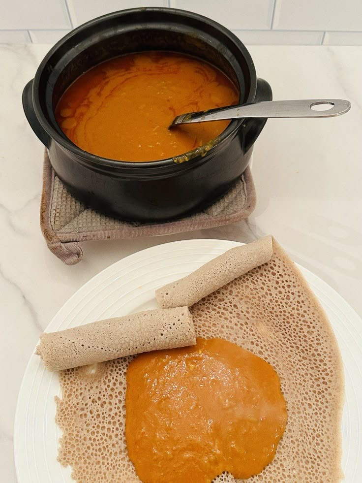

Shiro

Shiro is one of Ethiopia's most beloved dishes, a rich, flavorful stew made primarily from chickpea flour (shiro).
It's simple, hearty, and usually eaten with injera.
Ingredients
- Shiro powder
- Chickpea flour mixed with spice and berbere - 1 and 1/2 cups
- If you only have plain chickpea flour, you'll need to add berbere, garlic and other spices (or only berebere)
- 1-2 tablespoons berbere spice (depending on your spice preference)
- 2 medium onions (finely chopped or blended)
- 2 cloves garlic (minced)
- 1 medium tomato (finely chopped or blended)
- 3 tablespoons spiced butter (nitre kibbeh) optional (personally prefers without butter)
- 1 litre water
- salt
Step's with (chickpea flour mixed with spice and berebere)
- Prepare the base
- Heat a pot on medium heat.
- Add the choped onions without oil first. stir continuously
until they sweat down or loose water (about 5-7 minutes).
- Add oil and cook until onions turn slightly brown.
- Add tomato cook for (about 20-30 minutes).
- Add flavour
- Add garlic in the middle of the 20-30 min of tomato cooking.
- Build the stew
- pour 1 litre water and let cook for (10-15 minutes).
- Add salt.
- Add shiro flour stirring while adding to avoid lumps.
- Then let cook for 10 minutes.
- finish
- Add spiced butter (optional).
- On low heat let simmer for about 20 minutes.
- Serving
- Traditionally served hot with injera.
- you can garnish with fresh green chili.
- Eat by tearing off a piece of injera and scooping up the shiro.
Step's with (chickpea flour without berbere)
- Prepare the base
- Heat a pot on medium heat.
- Add the choped onions without oil first. stir continuously
until they sweat down or loose water (about 5-7 minutes).
- Add oil and cook until onions turn slightly brown.
- Add berbere spice and stir well for about 5-7 minutes.
- Add garlic and cook for another 1-2 minutes.
- Add tomato and cook for about 5 minutes.
- Build the stew
- pour 1 litre water and let cook for (10-15 minutes).
- Add salt.
- Add shiro flour stirring while adding to avoid lumps.
- Then let cook for 10 minutes.
- finish
- Add spiced butter (optional).
- On low heat let simmer for about 20 minutes.
- Serving
- Traditionally served hot with injera.
- you can garnish with fresh green chili.
- Eat by tearing off a piece of injera and scooping up the shiro.
Home